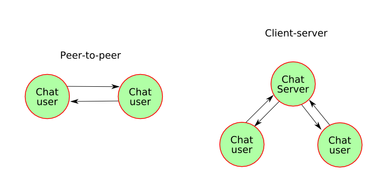
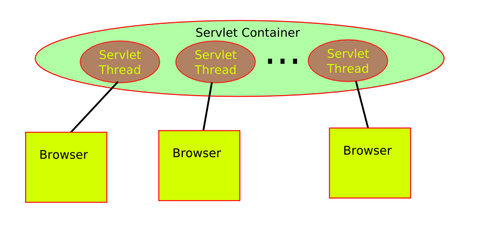

Design an application the allows two or more users to exchange text messages. Two possible architectures are:
The web uses a pull model, where a web browser fetches documents from a server. The server cannot push any data unless the browser has made a request.
Websockets is a new standard that will allow a push model.
The pull approach is also called the Comet.
In a chat application, the users expect that a message will be delivered when the user finishes the message. How can a pull model achieve this function?
A typical servlet implementation of an applications can be depicted as:
A browser communications with a server by requesting URLs. The designed URLs define the types of requests the a web application uses to communicate. The chatting application can be implemented with:
The chat part identifies the servlet. A messages is added with the chat/add URL. The speaker and message are specified in the query string. The messages exchanged starting at nextIndex are retrieved with the chat/next URL.
A web browsers uses the chat/add to send a message that the users types. The server responds with a status reply.
The browser continually makes chat/next requests to check for any new messages. The server responses with a HTML fragment containing all of the messages received from the given index. Note, these two URLs are independent, and can be requested concurrently.
<html>
<head>
<link rel="stylesheet" type="text/css" href="chat.css">
<script src="chat.js" type="text/javascript">
</script>
</head>
<body>
<label>
Speaker:
<input type="text" size="16" id="speakerData">
</label>
<br>
<form id="phraseFrom" action="javascript:void(1);">
<label>
Message:
<input type="text" size="40" id="phraseData">
</label>
</form>
<br>
<div id="dialog" class="dialog">
</div>
</body>
</html>
A phrase in a chat session can be modeled by:
A Java class for a phrase is:
package chat;
import java.util.Date;
import java.io.Serializable;
public class Phrase implements Serializable {
private String host = null;
private String speaker = "unknown";
private String phrase;
private Date date = new Date();
public Phrase( String phrase ) {
this.phrase = phrase;
}
public Phrase( String speaker, String phrase ) {
this( phrase );
this.speaker = speaker;
}
public Phrase( String speaker, String phrase, String host ) {
this( speaker, phrase );
this.host = host;
}
public Phrase( String speaker, String phrase, String host, Date date ) {
this( speaker, phrase, host );
this.date = date;
}
public String toString() {
StringBuffer sb = new StringBuffer();
sb.append( date.toString() );
if ( speaker != null && !speaker.equals( "unknown" ) ) {
sb.append( ":" );
sb.append( speaker );
}
if ( host != null ) {
sb.append( ":" );
sb.append( host );
}
if ( phrase != null ) {
sb.append( ":" );
sb.append( phrase );
}
return sb.toString();
}
public String getHost() {
return host;
}
public String getSpeaker() {
return speaker;
}
public String getPhrase() {
return phrase;
}
public Date getDate() {
return date;
}
public static void main( String[] args ) {
Phrase ph = new Phrase( "rod", "hi." );
System.out.println( ph );
}
}
Why does the class implement Serializable?
A chat is a sequence of phrases. A chat can be modeled by:
package chat;
import java.util.ArrayList;
import java.util.Iterator;
import java.io.Serializable;
public class Chat implements Serializable {
private ArrayList<Phrase> phrases =
new ArrayList<Phrase>();
private class ChatIterator implements
Iterator<Phrase>
{
private int index = 0;
public ChatIterator( int startIndex ) {
this.index = startIndex;
}
public synchronized boolean hasNext() {
return index < phrases.size();
}
public synchronized Phrase next() {
Phrase ph = phrases.get( index );
index++;
return ph;
}
public void remove() throws UnsupportedOperationException {
throw new UnsupportedOperationException();
}
}
public Chat() {}
public synchronized void addPhrase( Phrase ph ) {
phrases.add( ph );
// notifyAll is required to alert threads
// waiting for new phrases.
notifyAll();
}
public Iterator<Phrase> getPhrasesAfter( int start ) {
return new ChatIterator( start );
}
public synchronized Iterator<Phrase>
getPhrasesAfterWait( int start, int waitTime ) {
while( start >= phrases.size() ) {
try {
// the wait will block the servlet thread
// until it times out, or new phrases arrive
wait( waitTime );
if ( start >= phrases.size() ) return null;
}
catch( InterruptedException ex ) {
return null;
}
}
return new ChatIterator( start );
}
public synchronized int size() {
return phrases.size();
}
}
package chat;
import javax.servlet.ServletException;
import javax.servlet.http.HttpServlet;
import javax.servlet.http.HttpServletRequest;
import javax.servlet.http.HttpServletResponse;
import javax.servlet.http.HttpSession;
import java.io.IOException;
import java.io.PrintWriter;
import java.io.BufferedReader;
import java.io.UnsupportedEncodingException;
import java.util.Iterator;
import java.util.Date;
public class ChatServlet extends HttpServlet {
private static final String ADD = "add";
private static final String NEXT = "next";
private static final String START = "start";
private static final String PHRASE = "phrase";
private static final String SPEAKER = "speaker";
private static final int WAIT_TIME = 30000; // 30 seconds
private Chat chat = new Chat();
protected void doPost(
HttpServletRequest request, HttpServletResponse response)
throws ServletException, IOException
{
doGet( request, response);
}
private void sendReply(
HttpServletResponse response, String top, String msg )
throws ServletException, IOException
{
log( top + ":" + msg );
response.setContentType("text/xml");
PrintWriter out = response.getWriter();
out.print("<" + top + ">" );
out.print( msg );
out.println("</" + top + ">" );
}
protected void doGet(
HttpServletRequest request, HttpServletResponse response )
throws ServletException, IOException
{
String info = request.getPathInfo();
if ( info == null || info.length() < 1 ) {
sendReply( response, "error", "bad url" );
return;
}
info = info.substring(1);
if ( info.equals( NEXT ) ) {
processNext( request, response );
}
else if ( info.equals( ADD ) ) {
// this blocks for a fixed amount of time
processAdd( request, response );
}
else {
sendReply( response, "error", "bad url" );
}
}
private void processAdd(
HttpServletRequest request, HttpServletResponse response )
throws ServletException, IOException
{
response.setContentType("text/xml");
PrintWriter out = response.getWriter();
String phrase = request.getParameter( PHRASE );
if ( phrase == null ) {
log( "error: missing phrase" );
out.println("<error>missing phrase</error>");
return;
}
String speaker = request.getParameter( SPEAKER );
if ( speaker == null ) {
log( "error: missing speaker" );
out.println("<error>missing speaker</error>");
return;
}
String host = request.getRemoteAddr();
Phrase ph = new Phrase(speaker, phrase, host );
chat.addPhrase( ph );
out.println("<done>added</done>");
log( chat.size() + ":" + speaker + ":" + phrase );
}
private void processNext(
HttpServletRequest request, HttpServletResponse response )
throws ServletException, IOException
{
String st = request.getParameter( START );
if ( st == null ) {
sendReply( response, "error", "missing start" );
return;
}
int start = -1;
try {
start = Integer.parseInt( st );
}
catch( NumberFormatException ex ) {
sendReply( response, "error", "illegal start" );
return;
}
Iterator<Phrase> it =
chat.getPhrasesAfterWait(start, WAIT_TIME);
if ( it == null ) {
sendReply( response, "timeout", "timed out" );
return;
}
response.setContentType("text/xml");
PrintWriter out = response.getWriter();
outputPhrases( out, it);
}
private static void outputPhrases(
PrintWriter out, Iterator<Phrase> it )
{
out.println( "<div xmlns='http://www.w3.org/1999/xhtml'>" );
while ( it.hasNext() ) {
Phrase ph = it.next();
out.println("<div class='phrase'>");
Date d = ph.getDate();
out.println("<div class='date'>" + d + "</div>");
String h = ph.getHost();
if ( h != null ) {
out.println("<div class='host'>" + h + "</div>");
}
String s = ph.getSpeaker();
if ( s != null ) {
out.println("<div class='speaker'>" + s + "</div>");
}
String m = ph.getPhrase();
if ( m != null ) {
out.println("<div class='phrase'>" + m + "</div>");
}
out.println("</div>");
}
out.println( "</div>" );
}
}
(function(){
var phraseText = null;
var speakerData = null;
var dialogDiv = null;
var phraseCount = 0;
function doAddPhrase( evt ) {
var url = 'chat/add?';
url += 'speaker=' + escape(speakerData.value);
url += '&phrase=' + escape(phraseText.value);
phraseText.value = '';
var req = new XMLHttpRequest();
req.open("GET", url, true );
req.onreadystatechange = function() {
if ( req.readyState == 4) {
if ( req.status == 200 ) {
checkAdd( req );
}
else {
alert( req );
}
}
}
req.send( null );
}
function checkAdd( req ) {
var r = req.responseXML;
var d = r.documentElement;
if ( d.tagName == 'error' ) {
alert( d.textContent );
}
}
function doGetChat() {
var url = 'chat/next?start=' + phraseCount;
var req = new XMLHttpRequest();
req.open("GET", url, true );
req.onreadystatechange = function() {
if ( req.readyState == 4) {
if ( req.status == 200 ) {
addChat( req );
}
else {
alert( req );
}
}
}
req.send( null );
}
function addChat( req ) {
var r = req.responseXML;
if ( r == null ) return;
var d = r.documentElement;
if ( d.tagName == 'error' ) {
alert( d.textContent );
return;
}
else if ( d.tagName == 'timeout' ) {
doGetChat();
return;
}
var l = d.childNodes;
for( var i = 0 ; i < l.length; i++ ) {
var e = l[i];
if ( e.nodeType == Node.ELEMENT_NODE ) {
var n = document.importNode( e, true );
dialogDiv.appendChild( n );
phraseCount++;
}
}
// scroll to bottom
dialogDiv.scrollTop = dialogDiv.scrollHeight;
doGetChat();
}
function init_page( evt ) {
//window.setInterval( doPing, 1000 );
phraseText = document.getElementById( 'phraseData' );
speakerData = document.getElementById( 'speakerData' );
dialogDiv = document.getElementById( 'dialog' );
b = document.getElementById( 'phraseFrom' );
b.addEventListener('submit', doAddPhrase, false );
// start fetching chat updates
doGetChat();
}
window.addEventListener('load', init_page, false);
})();
<?xml version="1.0" encoding="ISO-8859-1"?>
<!DOCTYPE web-app
PUBLIC "-//Sun Microsystems, Inc.//DTD Web Application 2.2//EN"
"http://java.sun.com/j2ee/dtds/web-app_2_2.dtd">
<web-app>
<filter>
<filter-name>logger</filter-name>
<filter-class>chat.LogFilter</filter-class>
</filter>
<filter-mapping>
<filter-name>logger</filter-name>
<url-pattern> /* </url-pattern>
</filter-mapping>
<servlet>
<servlet-name>chat</servlet-name>
<servlet-class>chat.ChatServlet</servlet-class>
</servlet>
<servlet-mapping>
<servlet-name>chat</servlet-name>
<url-pattern>/chat/*</url-pattern>
</servlet-mapping>
</web-app>
package chat;
import javax.servlet.Filter;
import javax.servlet.FilterChain;
import javax.servlet.FilterConfig;
import javax.servlet.ServletContext;
import javax.servlet.ServletRequest;
import javax.servlet.ServletResponse;
import javax.servlet.http.HttpServletRequest;
import java.io.IOException;
import javax.servlet.ServletException;
import java.util.Date;
public class LogFilter implements Filter {
private FilterConfig filterConfig;
private ServletContext context;
public void doFilter (
ServletRequest request,
ServletResponse response,
FilterChain chain )
throws IOException, ServletException
{
HttpServletRequest req = (HttpServletRequest)request;
if ( context != null )
context.log( "LOG:" + req.getRemoteHost() + ":" + req.getRequestURI() );
chain.doFilter(request, response);
}
public void init (FilterConfig filterConfig) {
this.filterConfig = filterConfig;
this.context = filterConfig.getServletContext();
}
public void destroy () {
this.filterConfig = null;
this.context = null;
}
}
Maven is a project management tool, that can build, run, test, and deploy applications. The maven pom file is:
<?xml version="1.0"?>
<project xmlns="http://maven.apache.org/POM/4.0.0" xmlns:xsi="http://www.w3.org/2001/XMLSchema-instance" xsi:schemaLocation="http://maven.apache.org/POM/4.0.0 http://maven.apache.org/maven-v4_0_0.xsd">
<modelVersion>4.0.0</modelVersion>
<groupId>mun-cs-web</groupId>
<artifactId>chat-app</artifactId>
<version>0.1</version>
<packaging>war</packaging>
<name>chat</name>
<properties>
<!-- latest jetty 8, as of April 2013 -->
<!-- working 8.1.10.v20130312 -->
<!-- working 8.1.14.v20131031 -->
<jettyVersion>9.0.7.v20131107</jettyVersion>
</properties>
<dependencies>
<dependency>
<groupId>org.eclipse.jetty</groupId>
<artifactId>jetty-server</artifactId>
<version>${jettyVersion}</version>
</dependency>
<dependency>
<groupId>org.eclipse.jetty</groupId>
<artifactId>jetty-maven-plugin</artifactId>
<version>${jettyVersion}</version>
</dependency>
</dependencies>
<build>
<plugins>
<plugin>
<!-- org.eclipse.jetty for version 9 -->
<groupId>org.eclipse.jetty</groupId>
<artifactId>jetty-maven-plugin</artifactId>
<version>${jettyVersion}</version>
<configuration>
<webApp>
<contextPath>/${project.name}</contextPath>
</webApp>
<requestLog implementation="org.eclipse.jetty.server.NCSARequestLog">
<filename>target/yyyy_mm_dd.request.log</filename>
<retainDays>90</retainDays>
<append>true</append>
<extended>false</extended>
<logTimeZone>GMT</logTimeZone>
</requestLog>
</configuration>
</plugin>
<plugin>
<groupId>org.apache.maven.plugins</groupId>
<artifactId>maven-compiler-plugin</artifactId>
<configuration>
<jdkLevel>1.6</jdkLevel>
<source>1.6</source>
<target>1.6</target>
<compilerArgument/>
</configuration>
</plugin>
</plugins>
</build>
</project>
It can be tested with:
% mvn jetty:run
Help on the jetty commands is output with:
% mvn jetty:help
The webapp directory and war file can be created with:
% mvn package
The generated files can be removed with:
% mvn clean